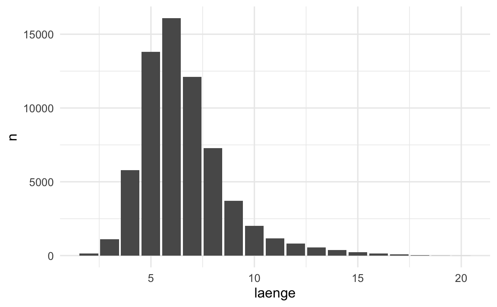

- Die Lernenden können die Funktion
str_detect()aus dem R-Paket stringr verwenden um das Auftreten oder Fehlen bestimmter Muster in Zeichenvektoren (character Vektor) zu ermitteln. - Due Lernenden können
str_detect()mitdplyrFunktionen wiefilter()odermutate()nutzen, um Daten über das Auftreten von Mustern in Teilmengen zu unterteilen oder darauf basierend neue Variablen zu erstellen. - Die Lernenden können das
statRR-Paket nutzen um eine Visualisierung im Corporate Design des Kanton Zürich zu erstellen.
Mit Text Daten arbeiten & KTZH Corporate Design mit statR
rstatsZH - Data Science mit R
Lernziele (für diese Woche)
Arbeiten mit Strings in R
- Strings -> Zeichenkette (eine folge von Zeichen)
- Werden verwendet um Textdaten darzustellen
- Können beliebige Länge haben
- Erstellt mit einfachen oder doppelten Anführungszeichen
- Sonderzeichen können mit dem Backslash
\“ausgenommen” werden
Anführungszeichen
- Erstellt mit einfachen oder doppelten Anführungszeichen
string1 <- "Dies ist eine Zeichenkette"
string2 <- 'Wenn ich ein "Anführungszeichen" in eine Zeichenkette einfügen
möchte, verwende ich einfache Anführungszeichen'Der Backslash \
Um ein einfaches oder doppeltes Anführungszeichen in einer Zeichenkette zu verwenden, kann \, um es “auszunehmen”:
double_quote <- "\""
single_quote <- '\''Falls du ein wörtliches Backslash in deiner Zeichenkette verwenden möchtest, musst du es “ausnehmen”: "\\":
backslash <- "\\"Beachte dass die gedruckte Darstellung einer Zeichenkette in der Console nicht identisch mit der Zeichenkette selbst ist:
x <- c(single_quote, double_quote, backslash)
x[1] "'" "\"" "\\"Um den Rohinhalt der Zeichenkette zu sehen, verwende str_view()
str_view(x)[1] │ '
[2] │ "
[3] │ \Beachte dass die gedruckte Darstellung einer Zeichenkette nicht identisch mit der Zeichenkette selbst ist, da die gedruckte Darstellung die Zeichen zeigt, welche die ausgenommenen Zeichen darstellen. Um den Rohinhalt der Zeichenkette zu sehen, verwende str_view():
Vornamen Statistik
Daten: Vornamen der Bevölkerung nach Jahrgang, Schweiz, 2023
- jährlich aktualisierte Daten
- Vornamen mit weniger als 3 Nennungen werden ausgeschlossen
- Datenquelle: Bundesamt für Statistik
Frage: Wieviele einzigartige Vornamen gibt es in der Schweiz?
- 200’000
- 1’000
- 1.0 mio
- 50’000
Vornamen Statistik
Frage: Wieviele einzigartige Vornamen gibt es in der Schweiz?
vornamen# A tibble: 976,068 × 4
vorname geburtsjahr wert geschlecht
<chr> <dbl> <dbl> <chr>
1 Olivier 1915 1 m
2 Florian 1917 1 m
3 Max 1917 1 m
4 Albert 1918 1 m
5 Co 1918 1 m
6 Julian 1918 1 m
7 Victor 1918 1 m
8 Alfred 1919 1 m
9 Valentin 1919 1 m
10 Walter 1919 1 m
# ℹ 976,058 more rowsvornamen |>
distinct(vorname)# A tibble: 65,401 × 1
vorname
<chr>
1 Olivier
2 Florian
3 Max
4 Albert
5 Co
6 Julian
7 Victor
8 Alfred
9 Valentin
10 Walter
# ℹ 65,391 more rowsVornamen Statistik
Frage: Was sind die häufigsten 10 Vornamen in der Schweiz?
# A tibble: 10 × 3
vorname geschlecht n
<chr> <chr> <dbl>
1 Maria w 74840
2 Daniel m 62884
3 Peter m 54007
4 Thomas m 52732
5 Hans m 44073
6 Christian m 41702
7 Martin m 40627
8 Anna w 40387
9 Michael m 39922
10 Andreas m 39583Vornamen Statistik
Frage: Was sind die häufigsten 10 Vornamen in der Schweiz?
Vornamen Statistik
Frage: Was sind die häufigsten 10 Vornamen in der Schweiz?
Vornamen Statistik
Frage: Was sind die häufigsten 10 Vornamen in der Schweiz?
vornamen |>
count(vorname, geschlecht,
wt = wert, sort = TRUE) |>
head(n = 10) |>
# nutze gt R-Package für die Darstellung
gt() |>
tab_style(
style = cell_fill(color = "#AFF0ED"),
locations = cells_body(
columns = everything(),
rows = geschlecht == "m"
)
) |>
tab_style(
style = cell_fill(color = "#FFD700"),
locations = cells_body(
columns = everything(),
rows = geschlecht == "w"
)
)| vorname | geschlecht | n |
|---|---|---|
| Maria | w | 74840 |
| Daniel | m | 62884 |
| Peter | m | 54007 |
| Thomas | m | 52732 |
| Hans | m | 44073 |
| Christian | m | 41702 |
| Martin | m | 40627 |
| Anna | w | 40387 |
| Michael | m | 39922 |
| Andreas | m | 39583 |
Vornamen Statistik
Frage: Was ist die Verteilung der Vornamenlängen in der Schweiz?
vornamen |>
count(vorname, wt = wert) |>
mutate(laenge = str_length(vorname)) |>
count(laenge) |>
print(n = 19)# A tibble: 19 × 2
laenge n
<int> <int>
1 2 128
2 3 1094
3 4 5780
4 5 13793
5 6 16075
6 7 12114
7 8 7294
8 9 3719
9 10 2013
10 11 1155
11 12 811
12 13 559
13 14 384
14 15 233
15 16 131
16 17 75
17 18 30
18 19 9
19 20 4Vornamen Statistik
Frage: Was ist die Verteilung der Vornamenlängen in der Schweiz?
vornamen_laenge_sum <- vornamen |>
count(vorname, wt = wert) |>
mutate(laenge = str_length(vorname)) |>
count(laenge)
ggplot(data = vornamen_laenge_sum,
mapping = aes(x = laenge, y = n)) +
geom_col() +
theme_minimal(base_size = 12)
Ihr seid dran: Vornamen Statistik
Frage: Welche Fragen könnten wir noch zu den Vornamen in der Schweiz stellen?
- Macht ein paar Notizen.
- Teilt sie im Chat.
02:00
stringr: Zeichenkettenmanipulation in R
Hauptmerkmale:
- Teil der tidyverse R-Pakete
- Konsistente Syntax mit str_-Präfix
Funktionen:
str_length(): Stringlänge ermittelnstr_c(): Strings verkettenstr_sub(): Teilstrings extrahieren/ersetzenstr_detect(): Mustererkennungstr_count(): Anzahl Vorkommen eines Musters- …
Ich bin dran: stringr R-Paket
Zurücklehnen und Fragen stellen!
30:00
Pause machen
Bitte steh auf und beweg dich. Lasst eure E-Mails in Frieden ruhen.

10:00
Kanton Zürich - Corporate Design
Vornamen Statistik mit statR R-Paket

statR R-Paket
- Erstellt Corporate Design Visualisierungen für den Kanton Zürich
- Enthält ein benutzerdefiniertes
ggplot2-Theme - Bietet generische Farbpaletten für Datenvisualisierungen
- Export von Datensätzen als XLSX-Dateien mit Quellinformationen und zusätzlichen Metadaten
- Stellt eine HTML-Berichtsvorlage zur Verfügung
- Offen auf GitHub verfügbar: https://github.com/statistikZH/statR
Wir sind dran: 02-statR-wir.qmd
- Öffne posit.cloud in deinem Browser (verwende dein Lesezeichen).
- Öffne den rstatszh-k009 Arbeitsbereich (Workspace) für den Kurs.
- Klicke auf Start neben md-08-uebungen.
- Suche im Dateimanager im Fenster unten rechts die Datei
02-statR-wir.qmdund klicke darauf, um sie im Fenster oben links zu öffnen.
30:00
Pause machen
Bitte steh auf und beweg dich. Lasst eure E-Mails in Frieden ruhen.

10:00
Ihr seid dran: 03-vornamen-ihr.qmd
- Öffne posit.cloud in deinem Browser (verwende dein Lesezeichen).
- Öffne den rstatszh-k009 Arbeitsbereich (Workspace) für den Kurs.
- Klicke auf Continue neben md-08-uebungen.
- Suche im Dateimanager im Fenster unten rechts die Datei
03-vornamen-ihr.qmdund klicke darauf, um sie im Fenster oben links zu öffnen. - Folge den Anweisungen in der Datei.
30:00
Zeitpuffer: Modul 8
Kann ich noch etwas zum heutigen Modul erklären?
10:00
Zusatzaufgaben Modul 8
Modul 8 Dokumentation
Zusatzaufgaben Abgabedatum
- Abgabedatum: Montag, 18. November
- Korrektur- und Feedbackphase bis zu: Donnerstag, 21. November
Danke
Danke! 🌻
Folien erstellt mit revealjs und Quarto: https://quarto.org/docs/presentations/revealjs/ Access slides als PDF auf GitHub
Alle Materialien sind lizenziert unter Creative Commons Attribution Share Alike 4.0 International.